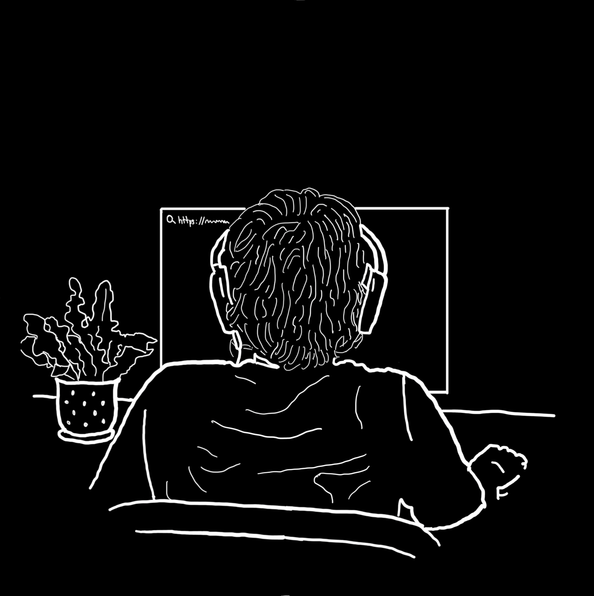

Hi! If you can't tell already, I'm Raashid, a second year Computer Science Student at the University of Toronto St.George.
I'm deeply interested in the many multidisciplinary applications of Computer Science, particularily regarding Geography and Economics. I love working with spatial and geographic data to help machines understand our world.
This website is partly a portfolio of my work, but mostly
a canvas to explore CSS gimmicks. In an era of rapid AI growth, which I hope to positively contrbute to, I think
it's important to remain in touch with what makes us uniquely human, including creative outlets like this.